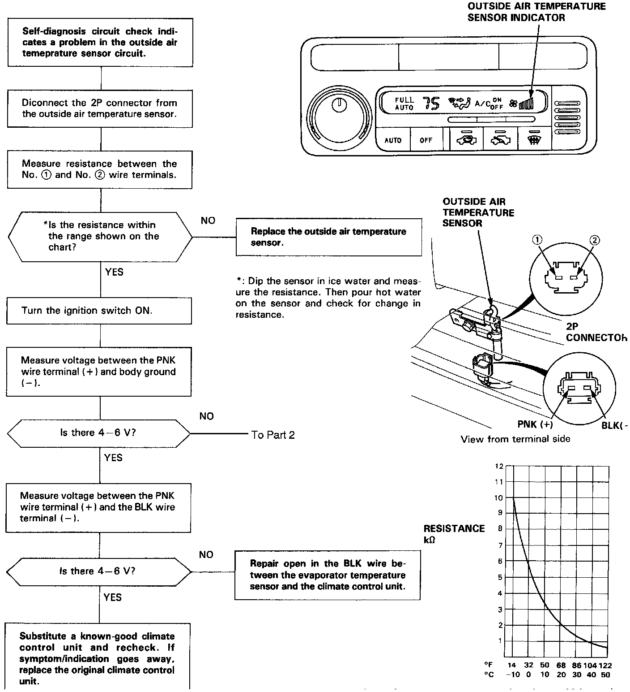
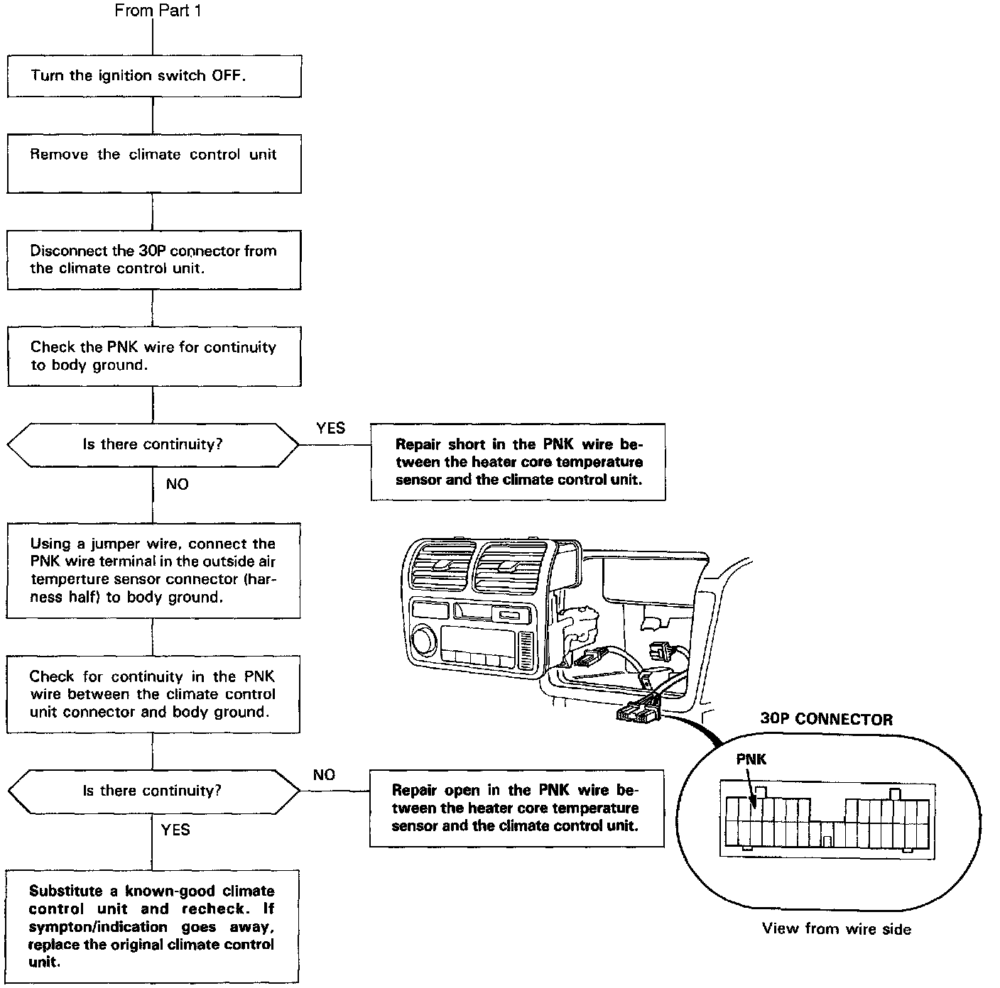

Diagnostic Flowchart
OUTSIDE AIR TEMPERATURE SENSORThe outside air temperature sensor is a temperature dependent resistor (thermistor). The resistance of the thermistor decreases as the temperature outside the car increases. Use a digital multimeter (KS-AHM-32-OO3) to check it.
CAUTION: The sensor uses a thermistor which can be damaged if high current is applied to it during testing. Therefore, use a circuit tester that puts out a measuring current of 1 mA or less. (At 20 K Ohm range)

